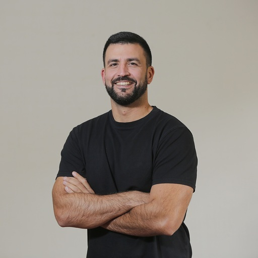

Mechanistic interpretability
Reverse-engineering the circuits and representations inside large language models to understand how they compute.
// Director of Research · CENIA
I study how neural networks represent, process and reason about information, drawing on mechanistic interpretability and computational neuroscience to build AI that is more reliable, transparent and trustworthy.

attn(Q,K,V) circuits neurons ↔ unitsI earned my PhD from the Université Libre de Bruxelles, followed by postdoctoral research appointments at Ghent University (Belgium) and Brown University (United States). I currently serve as Director of Research at the Chilean National Center for Artificial Intelligence (CENIA), where my work focuses on mechanistic interpretability and computational neuroscience.
My research aims to enhance the expressivity of Transformer models, the neural architecture underlying large language models, and to advance our understanding of their internal mechanisms. Through mechanistic interpretability, I seek to promote AI safety by developing a deeper understanding of how these systems represent, process, and reason about information.
Reverse-engineering the circuits and representations inside large language models to understand how they compute.
Designing architectural changes that extend what Transformers can represent and learn.
Using models of brain computation to inspire, and to test, theories of how artificial networks work.
Turning mechanistic understanding into tools for more reliable, transparent and trustworthy AI.
CENIA is always looking for motivated students to work on a plethora of AI topics.